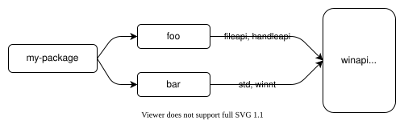

Featureها
«featureهای» Cargo سازوکاری برای بیان کامپایل شرطی و وابستگیهای اختیاری فراهم میکنند. یک بسته مجموعهای از featureهای نامدار را در جدول [features] فایل Cargo.toml تعریف میکند و هر feature میتواند فعال یا غیرفعال باشد. featureهای بستهای که در حال ساخت است را میتوان در خط فرمان با پرچمهایی مانند --features فعال کرد. featureهای وابستگیها را میتوان در اعلان وابستگی در Cargo.toml فعال کرد.
Note
crateها یا نسخههای جدیدی که در crates.io منتشر میشوند اکنون حداکثر به ۳۰۰ feature محدود هستند. استثناها بهصورت موردی داده میشود. برای جزئیات این پست وبلاگ را ببینید. مشارکت در بحثهای مربوط به راهحل از طریق stream مربوط به crates.io در Zulip تشویق میشود.
برای دیدن چند نمونه از شیوهٔ استفاده از featureها، فصل نمونههایی از Featureها را نیز ببینید.
بخش [features]
featureها در جدول [features] فایل Cargo.toml تعریف میشوند. هر feature آرایهای از featureهای دیگر یا وابستگیهای اختیاری را که فعال میکند مشخص میکند. مثالهای زیر نشان میدهند که featureها چگونه میتوانند در یک کتابخانهٔ پردازش تصویر دوبعدی به کار روند که در آن پشتیبانی از قالبهای مختلف تصویر میتواند بهصورت اختیاری گنجانده شود:
[features]
# Defines a feature named `webp` that does not enable any other features.
webp = []
با تعریف این feature، میتوان از عبارتهای cfg برای گنجاندن شرطی کدِ پشتیبانی از feature درخواستشده در زمان کامپایل استفاده کرد. برای مثال، درون فایل lib.rs بسته میتوان این را قرار داد:
// This conditionally includes a module which implements WEBP support.
#[cfg(feature = "webp")]
pub mod webp;Cargo featureها را در بسته با پرچم --cfg در rustc تنظیم میکند و کد میتواند وجود آنها را با attribute با نام cfg یا ماکروی cfg بررسی کند.
featureها میتوانند featureهای دیگری را برای فعالسازی فهرست کنند. برای مثال، قالب تصویر ICO میتواند شامل تصاویر BMP و PNG باشد، بنابراین وقتی فعال میشود، باید مطمئن شود آن featureهای دیگر نیز فعالاند:
[features]
bmp = []
png = []
ico = ["bmp", "png"]
webp = []
نام featureها میتواند شامل نویسههایی از استاندارد Unicode XID (که بیشتر حروف را در بر میگیرد) باشد، و علاوه بر آن اجازه میدهد با _ یا ارقام 0 تا 9 شروع شود، و پس از نویسهٔ اول نیز میتواند شامل -، + یا . باشد.
Note
(https://crates.io/) محدودیتهای اضافهای بر نحو نام feature اعمال میکند؛ نام فقط باید از نویسههای الفبایی-عددی ASCII یا
_،-یا+تشکیل شده باشد.
feature با نام default
بهطور پیشفرض، همهٔ featureها غیرفعالاند مگر اینکه بهصراحت فعال شوند. این رفتار را میتوان با مشخص کردن feature با نام default تغییر داد:
[features]
default = ["ico", "webp"]
bmp = []
png = []
ico = ["bmp", "png"]
webp = []
وقتی بسته ساخته میشود، feature با نام default فعال میشود و بهنوبهٔ خود featureهای فهرستشده را فعال میکند. این رفتار را میتوان به این شکلها تغییر داد:
- پرچم خط فرمان با نام
--no-default-featuresfeatureهای پیشفرض بسته را غیرفعال میکند. - گزینهٔ
default-features = falseرا میتوان در اعلان وابستگی مشخص کرد.
Important
دربارهٔ انتخاب مجموعهٔ featureهای پیشفرض دقت کنید. featureهای پیشفرض یک راحتیاند که استفاده از بسته را بدون اینکه کاربر مجبور باشد برای کاربرد رایج با دقت featureهای فعال را انتخاب کند آسانتر میکنند، اما معایبی هم دارند. وابستگیها بهطور خودکار featureهای پیشفرض را فعال میکنند مگر اینکه
default-features = falseمشخص شده باشد. این میتواند اطمینان از فعال نبودن featureهای پیشفرض را دشوار کند، بهویژه برای وابستگیای که چند بار در گراف وابستگی ظاهر میشود. هر بسته باید مطمئن شود کهdefault-features = falseرا مشخص کرده است تا از فعال شدن آنها جلوگیری کند.مشکل دیگر این است که حذف یک feature از مجموعهٔ پیشفرض میتواند یک تغییر ناسازگار با SemVer باشد، بنابراین باید مطمئن باشید که آن featureها را حفظ خواهید کرد.
وابستگیهای اختیاری
وابستگیها را میتوان «اختیاری» (optional) علامتگذاری کرد، یعنی بهطور پیشفرض کامپایل نمیشوند. برای مثال، فرض کنید کتابخانهٔ پردازش تصویر دوبعدی ما برای کار با تصاویر GIF از یک بستهٔ خارجی استفاده میکند. این را میتوان اینگونه بیان کرد:
[dependencies]
gif = { version = "0.11.1", optional = true }
بهطور پیشفرض، این وابستگی اختیاری بهصورت ضمنی featureای تعریف میکند که به این شکل است:
[features]
gif = ["dep:gif"]
یعنی این وابستگی فقط در صورتی گنجانده میشود که feature با نام gif فعال باشد. همان نحو cfg(feature = "gif") را میتوان در کد به کار برد، و وابستگی را مانند هر feature دیگری میتوان فعال کرد، مثلاً با --features gif (در ادامه گزینههای feature در خط فرمان را ببینید).
در برخی موارد ممکن است نخواهید featureای همنام وابستگی اختیاری در دسترس قرار دهید. برای مثال، شاید وابستگی اختیاری یک جزئیات داخلی باشد، یا بخواهید چند وابستگی اختیاری را با هم گروهبندی کنید، یا فقط بخواهید نام بهتری به کار ببرید. اگر وابستگی اختیاری را با پیشوند dep: در هر جای جدول [features] مشخص کنید، feature ضمنی غیرفعال میشود.
Note
نحو
dep:فقط از Rust 1.60 به بعد در دسترس است. نسخههای قبلی فقط میتوانند از نام feature ضمنی استفاده کنند.
برای مثال، فرض کنید برای پشتیبانی از قالب تصویر AVIF، کتابخانهٔ ما باید دو وابستگی دیگر را فعال کند:
[dependencies]
ravif = { version = "0.6.3", optional = true }
rgb = { version = "0.8.25", optional = true }
[features]
avif = ["dep:ravif", "dep:rgb"]
در این مثال، feature با نام avif دو وابستگی فهرستشده را فعال میکند. این همچنین از ایجاد featureهای ضمنی ravif و rgb جلوگیری میکند، زیرا نمیخواهیم کاربران آنها را جداگانه فعال کنند، چون جزئیات داخلی crate ما هستند.
Note
راه دیگر برای گنجاندن اختیاری یک وابستگی، استفاده از وابستگیهای مختص پلتفرم است. این وابستگیها بهجای استفاده از featureها، بر اساس پلتفرم هدف مشروط میشوند.
featureهای وابستگی
featureهای وابستگیها را میتوان درون اعلان وابستگی فعال کرد. کلید features مشخص میکند کدام featureها فعال شوند:
[dependencies]
# Enables the `derive` feature of serde.
serde = { version = "1.0.118", features = ["derive"] }
featureهای default را میتوان با default-features = false غیرفعال کرد:
[dependencies]
flate2 = { version = "1.0.3", default-features = false, features = ["zlib-rs"] }
Note
این کار ممکن است تضمین نکند که featureهای پیشفرض غیرفعال شوند. اگر وابستگی دیگری
flate2را بدون مشخص کردنdefault-features = falseشامل شود، featureهای پیشفرض فعال خواهند شد. برای جزئیات بیشتر، در ادامه یکپارچهسازی feature را ببینید.
featureهای وابستگیها را میتوان در جدول [features] نیز فعال کرد. نحو آن "package-name/feature-name" است. برای مثال:
[dependencies]
jpeg-decoder = { version = "0.1.20", default-features = false }
[features]
# Enables parallel processing support by enabling the "rayon" feature of jpeg-decoder.
parallel = ["jpeg-decoder/rayon"]
نحو "package-name/feature-name" در صورتی که package-name یک وابستگی اختیاری باشد، آن را نیز فعال میکند. اغلب این چیزی نیست که میخواهید. میتوانید یک ? اضافه کنید، مانند "package-name?/feature-name"، که feature دادهشده را فقط در صورتی فعال میکند که چیز دیگری وابستگی اختیاری را فعال کرده باشد.
Note
نحو
?فقط از Rust 1.60 به بعد در دسترس است.
برای مثال، فرض کنید مقداری پشتیبانی از سریالسازی به کتابخانهٔ خود اضافه کردهایم و این کار مستلزم فعال کردن featureای متناظر در برخی وابستگیهای اختیاری است. این کار را میتوان اینگونه انجام داد:
[dependencies]
serde = { version = "1.0.133", optional = true }
rgb = { version = "0.8.25", optional = true }
[features]
serde = ["dep:serde", "rgb?/serde"]
در این مثال، فعال کردن feature با نام serde وابستگی serde را فعال میکند. همچنین feature با نام serde را برای وابستگی rgb فعال میکند، اما فقط اگر چیز دیگری وابستگی rgb را فعال کرده باشد.
گزینههای feature در خط فرمان
پرچمهای خط فرمان زیر را میتوان برای کنترل اینکه کدام featureها فعال شوند به کار برد:
--featuresFEATURES: featureهای فهرستشده را فعال میکند. چند feature را میتوان با ویرگول یا فاصله از هم جدا کرد. اگر از فاصله استفاده میکنید، هنگام اجرای Cargo از یک شل حتماً همهٔ featureها را درون گیومه بگذارید (مانند--features "foo bar"). اگر چند بسته را در یک workspace میسازید، میتوان از نحوpackage-name/feature-nameبرای مشخص کردن featureهای اعضای خاص workspace استفاده کرد.--all-features: همهٔ featureهای همهٔ بستههایی را که در خط فرمان انتخاب شدهاند فعال میکند.--no-default-features: feature با نامdefaultرا برای بستههای انتخابشده فعال نمیکند.
Note
برای جزئیات، مستندات هر زیرفرمان را بررسی کنید. همهٔ پرچمها برای همهٔ زیرفرمانها در دسترس نیستند.
یکپارچهسازی featureها (Feature unification)
featureها منحصر به بستهای هستند که آنها را تعریف میکند. فعال کردن یک feature در یک بسته، featureای با همان نام را در بستههای دیگر فعال نمیکند.
وقتی یک وابستگی توسط چند بسته استفاده میشود، Cargo هنگام ساخت آن وابستگی از اجتماع همهٔ featureهایی که روی آن فعال شدهاند استفاده میکند. این کار کمک میکند که فقط یک نسخه از وابستگی به کار رود. برای جزئیات بیشتر، بخش featureها در مستندات resolver را ببینید.
برای مثال، بستهٔ winapi را در نظر بگیرید که از تعداد زیادی feature استفاده میکند. اگر بستهٔ شما به بستهٔ foo وابسته باشد که featureهای «fileapi» و «handleapi» از winapi را فعال میکند، و به وابستگی دیگری به نام bar وابسته باشد که featureهای «std» و «winnt» از winapi را فعال میکند، آنگاه winapi با فعال بودن هر چهار feature ساخته خواهد شد.

یکی از پیامدهای این موضوع این است که featureها باید افزایشی (additive) باشند. یعنی فعال کردن یک feature نباید قابلیتی را غیرفعال کند، و معمولاً باید فعال کردن هر ترکیبی از featureها ایمن باشد. یک feature نباید تغییر ناسازگار با SemVer ایجاد کند.
برای مثال، اگر میخواهید بهصورت اختیاری از محیطهای no_std پشتیبانی کنید، از feature با نام no_std استفاده نکنید. در عوض از featureای با نام std استفاده کنید که std را فعال میکند. برای مثال:
#![no_std]
#[cfg(feature = "std")]
extern crate std;
#[cfg(feature = "std")]
pub fn function_that_requires_std() {
// ...
}featureهای متقابلاً ناسازگار
موارد نادری وجود دارد که featureها ممکن است با یکدیگر ناسازگار باشند. در صورت امکان باید از این وضعیت پرهیز کرد، زیرا مستلزم هماهنگی همهٔ کاربردهای بسته در گراف وابستگی است تا همکاری کنند و آنها را با هم فعال نکنند. اگر ممکن نیست، اضافه کردن یک خطای کامپایل برای تشخیص این سناریو را در نظر بگیرید. برای مثال:
#[cfg(all(feature = "foo", feature = "bar"))]
compile_error!("feature \"foo\" and feature \"bar\" cannot be enabled at the same time");بهجای استفاده از featureهای متقابلاً ناسازگار، چند گزینهٔ دیگر را در نظر بگیرید:
- قابلیتها را به بستههای جداگانه تقسیم کنید.
- وقتی تعارضی وجود دارد، یک feature را بر دیگری ترجیح دهید. بستهٔ
cfg-ifمیتواند در نوشتن عبارتهای پیچیدهترcfgکمک کند. - کد را طوری طراحی کنید که featureها همزمان فعال شوند، و از گزینههای زمان اجرا برای کنترل اینکه کدام یک استفاده شود بهره ببرید. برای مثال، از یک فایل پیکربندی، آرگومان خط فرمان یا متغیر محیطی برای انتخاب رفتاری که باید فعال شود استفاده کنید.
بررسی featureهای حلشده
در گرافهای وابستگی پیچیده، گاهی درک اینکه featureهای مختلف چگونه روی بستههای گوناگون فعال میشوند دشوار است. فرمان cargo tree چند گزینه برای کمک به بررسی و تصویرسازی اینکه کدام featureها فعالاند ارائه میدهد. چند گزینه برای امتحان:
cargo tree -e features: featureها را در گراف وابستگی نشان میدهد. هر feature همراه با اینکه کدام بسته آن را فعال کرده نمایش داده میشود.cargo tree -f "{p} {f}": نمایی فشردهتر که فهرستی از featureهای فعال روی هر بسته را، جداشده با ویرگول، نشان میدهد.cargo tree -e features -i foo: درخت را وارونه میکند و نشان میدهد featureها چگونه به بستهٔ دادهشدهٔ «foo» میرسند. این میتواند مفید باشد، زیرا دیدن کل گراف ممکن است بسیار بزرگ و گیجکننده باشد. زمانی از این استفاده کنید که میخواهید بفهمید چه featureهایی روی یک بستهٔ مشخص فعالاند و چرا. برای آموزش نحوهٔ خواندن این خروجی، مثال انتهای صفحهٔcargo treeرا ببینید.
نسخهٔ ۲ حلکنندهٔ feature (resolver)
میتوان با فیلد resolver در Cargo.toml حلکنندهٔ feature متفاوتی مشخص کرد، مانند این:
[package]
name = "my-package"
version = "1.0.0"
resolver = "2"
برای جزئیات بیشتر دربارهٔ مشخص کردن نسخههای resolver، بخش نسخههای resolver را ببینید.
resolver نسخهٔ "2" در چند وضعیت که یکپارچهسازی ممکن است نامطلوب باشد، از یکپارچهسازی featureها پرهیز میکند. وضعیتهای دقیق در فصل resolver شرح داده شدهاند، اما بهطور خلاصه در این وضعیتها از یکپارچهسازی پرهیز میکند:
- featureهای فعالشده روی وابستگیهای مختص پلتفرم برای معماریهای هدف که در حال حاضر ساخته نمیشوند نادیده گرفته میشوند.
- وابستگیهای ساخت و proc-macroها featureها را با وابستگیهای عادی به اشتراک نمیگذارند.
- وابستگیهای توسعه featureها را فعال نمیکنند، مگر اینکه یک هدف Cargo که به آنها نیاز دارد (مانند آزمونها یا مثالها) ساخته شود.
پرهیز از یکپارچهسازی در برخی موقعیتها ضروری است. برای مثال، اگر یک وابستگی ساخت feature با نام std را فعال کند، و همان وابستگی بهعنوان وابستگی عادی برای یک محیط no_std به کار رود، فعال شدن std ساخت را خراب میکند.
با این حال، یک عیب این است که این کار میتواند زمان ساخت را افزایش دهد، زیرا وابستگی چند بار ساخته میشود (هر بار با featureهای متفاوت). هنگام استفاده از resolver نسخهٔ "2" توصیه میشود وابستگیهایی را که چند بار ساخته میشوند بررسی کنید تا زمان کلی ساخت کاهش یابد. اگر ساخت آن بستههای تکراری با featureهای جداگانه لازم نیست، افزودن featureها به فهرست features در اعلان وابستگی را در نظر بگیرید تا نسخههای تکراری با featureهای یکسان تمام شوند (و در نتیجه Cargo فقط یک بار آن را بسازد). میتوانید این وابستگیهای تکراری را با فرمان cargo tree --duplicates پیدا کنید. این فرمان نشان میدهد کدام بستهها چند بار ساخته میشوند؛ به دنبال هر موردی بگردید که با نسخهٔ یکسان فهرست شده است. برای اطلاعات بیشتر دربارهٔ دریافت اطلاعات featureهای حلشده، بررسی featureهای حلشده را ببینید. برای وابستگیهای ساخت، اگر با پرچم --target کامپایل متقاطع (cross-compile) میکنید این کار لازم نیست، زیرا در آن سناریو وابستگیهای ساخت همیشه جدا از وابستگیهای عادی ساخته میشوند.
پرچمهای خط فرمان در resolver نسخهٔ ۲
تنظیم resolver = "2" رفتار --features و --no-default-features را نیز تغییر میدهد (گزینههای خط فرمان).
با نسخهٔ "1" فقط میتوانید featureهای بستهٔ موجود در پوشهٔ کاری فعلی را فعال کنید. برای مثال، در یک workspace با بستههای foo و bar، اگر در پوشهٔ بستهٔ foo باشید و فرمان cargo build -p bar --features bar-feat را اجرا کنید، این فرمان شکست میخورد، زیرا پرچم --features فقط اجازهٔ فعال کردن featureهای foo را میداد.
با resolver = "2"، پرچمهای feature اجازه میدهند featureهای هر یک از بستههای انتخابشده در خط فرمان با پرچمهای -p و --workspace فعال شوند. برای مثال:
# This command is allowed with resolver = "2", regardless of which directory
# you are in.
cargo build -p foo -p bar --features foo-feat,bar-feat
# This explicit equivalent works with any resolver version:
cargo build -p foo -p bar --features foo/foo-feat,bar/bar-feat
علاوه بر این، با resolver = "1"، پرچم --no-default-features فقط feature پیشفرض را برای بستهٔ موجود در پوشهٔ فعلی غیرفعال میکند. با نسخهٔ «2»، featureهای پیشفرض همهٔ اعضای workspace را غیرفعال میکند.
Build scriptها
Build scriptها میتوانند با بررسی متغیر محیطی CARGO_FEATURE_<name> تشخیص دهند کدام featureها روی بسته فعالاند؛ در آن، <name> نام feature است که به حروف بزرگ تبدیل شده و - به _ تبدیل شده است.
featureهای الزامی
فیلد required-features را میتوان برای غیرفعال کردن اهداف Cargo مشخص در صورت فعال نبودن یک feature به کار برد. برای جزئیات بیشتر، مستندات پیوندشده را ببینید.
سازگاری با SemVer
فعال کردن یک feature نباید تغییری ناسازگار با SemVer ایجاد کند. برای مثال، feature نباید یک API موجود را به شکلی تغییر دهد که کاربردهای موجود را خراب کند. جزئیات بیشتر دربارهٔ اینکه چه تغییراتی سازگارند را میتوانید در فصل سازگاری SemVer بیابید.
هنگام افزودن و حذف تعریف featureها و وابستگیهای اختیاری باید دقت کرد، زیرا اینها گاهی میتوانند تغییرات ناسازگار با نسخههای قبلی باشند. جزئیات بیشتر را میتوانید در بخش Cargo از فصل سازگاری SemVer بیابید. بهطور خلاصه، این قواعد را رعایت کنید:
- انجام موارد زیر معمولاً در یک انتشار جزئی (minor) ایمن است:
- موارد زیر معمولاً نباید در یک انتشار جزئی (minor) انجام شوند:
برای هشدارها و مثالها به پیوندها مراجعه کنید.
مستندسازی و کشف featureها
توصیه میشود featureهای موجود در بستهٔ خود را مستند کنید. این کار را میتوان با افزودن توضیحات مستندات در ابتدای lib.rs انجام داد. برای نمونه، سورس crate با نام regex را ببینید که پس از رندر شدن در docs.rs قابل مشاهده است. اگر مستندات دیگری مانند راهنمای کاربر دارید، افزودن مستندات به آنجا را در نظر بگیرید (برای مثال، serde.rs را ببینید). اگر پروژهٔ شما باینری است، مستندسازی featureها را در README یا مستندات دیگر پروژه در نظر بگیرید (برای مثال، sccache را ببینید).
مستندسازی روشن featureها میتواند انتظارات را دربارهٔ featureهایی که «ناپایدار» (unstable) محسوب میشوند یا نباید استفاده شوند مشخص کند. برای مثال، اگر وابستگی اختیاریای وجود دارد اما نمیخواهید کاربران آن وابستگی اختیاری را صراحتاً بهعنوان feature فهرست کنند، آن را از فهرست مستندشده کنار بگذارید.
مستنداتی که در docs.rs منتشر میشوند میتوانند از فرادادهٔ Cargo.toml برای کنترل اینکه هنگام ساخت مستندات کدام featureها فعال باشند استفاده کنند. برای جزئیات بیشتر، مستندات فرادادهٔ docs.rs را ببینید.
Note
Rustdoc پشتیبانی آزمایشی از حاشیهنویسی مستندات دارد تا نشان دهد برای استفاده از برخی APIها کدام featureها لازماند. برای جزئیات بیشتر مستندات
doc_cfgرا ببینید. یک نمونه مستنداتsynاست که در آن میتوانید جعبههای رنگی ببینید که مشخص میکنند برای استفاده از آن کدام featureها لازماند.
کشف featureها
وقتی featureها در API کتابخانه مستند شده باشند، کاربران شما راحتتر میتوانند بفهمند چه featureهایی در دسترساند و چه کاری انجام میدهند. اگر مستندات featureهای یک بسته بهآسانی در دسترس نباشد، میتوانید به فایل Cargo.toml نگاه کنید، اما گاهی یافتن آن دشوار است. صفحهٔ crate در crates.io در صورت وجود، پیوندی به مخزن سورس دارد. ابزارهایی مانند cargo vendor یا cargo-clone-crate را میتوان برای دانلود سورس و بررسی آن به کار برد.
ترکیبهای feature
از آنجا که featureها نوعی کامپایل شرطی هستند، برای پوشش ۱۰۰٪ به تعداد نمایی پیکربندی و موارد آزمون نیاز دارند. بهطور پیشفرض، آزمونها، مستندات و ابزارهای دیگر مانند Clippy فقط با مجموعهٔ پیشفرض featureها اجرا میشوند.
توصیه میکنیم دربارهٔ راهبرد و ابزارهای خود در قبال ترکیبهای مختلف feature فکر کنید — هر پروژه با توجه به زمان، منابع و نسبت هزینه به فایده در پوشش سناریوهای خاص، نیازهای متفاوتی خواهد داشت. پیکربندیهای رایج میتوانند با / بدون featureهای پیشفرض، ترکیبهای خاصی از featureها، یا همهٔ ترکیبهای featureها باشند.